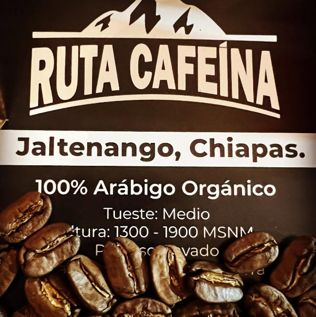
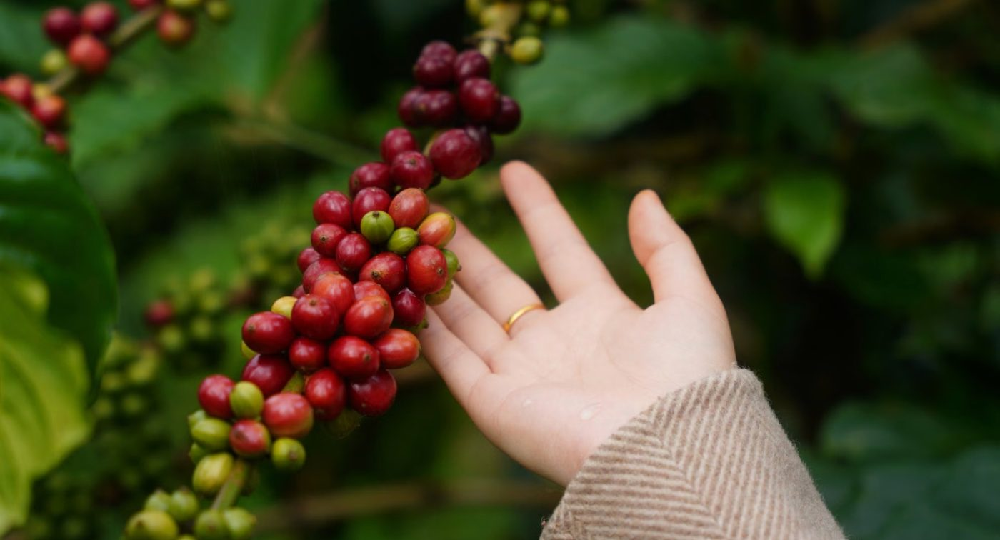
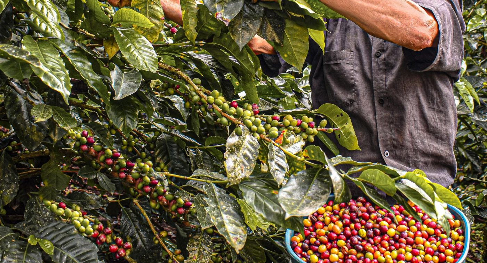
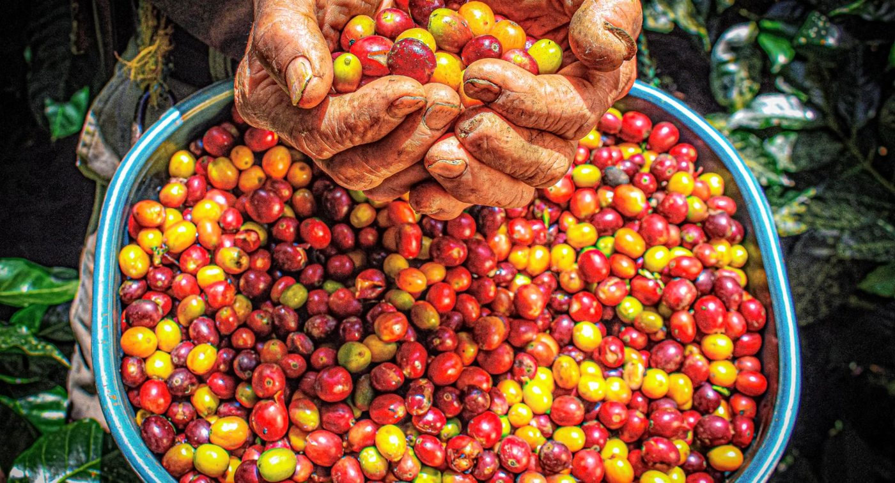
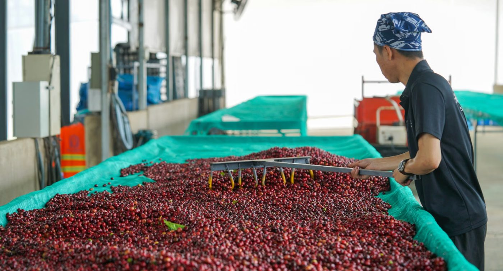
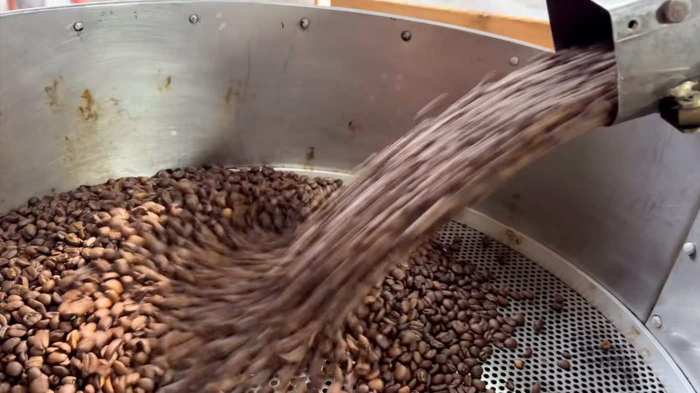
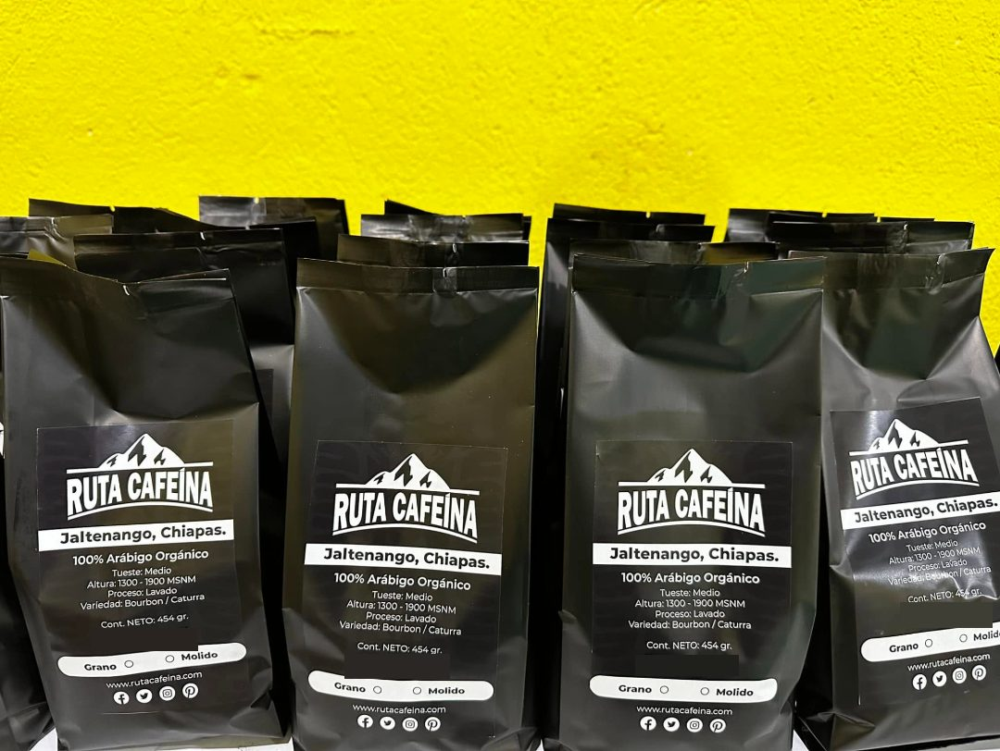
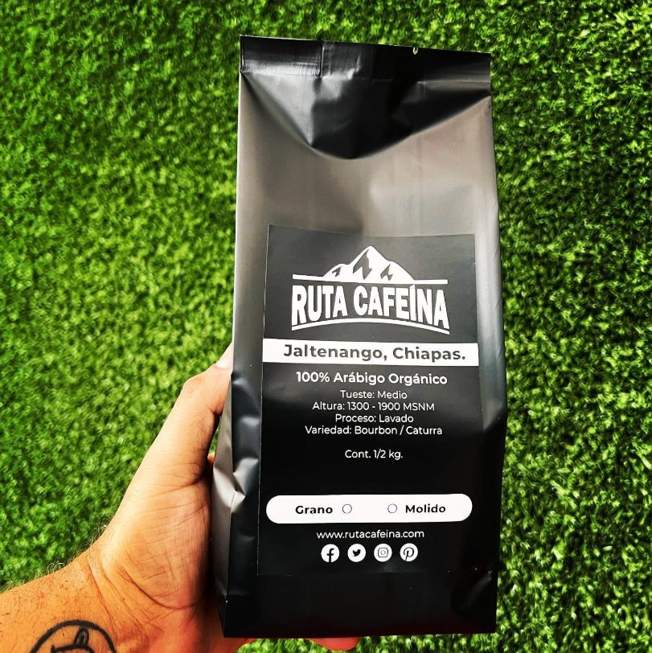

Cafeterías
Café de origen único con historia que contar a tus clientes.
- Degustación en tu barra sin costo
- Mismo perfil de tueste cada mes
- Entrega programada en Mérida
Jaltenango, Chiapas · Mérida, Yucatán
Grano 100% arábigo de la Sierra Madre de Chiapas, tostado medio, en grano o molido. Lo llevamos hasta tu cafetería, tu oficina o tu casa.
Nuestro café
No es una mezcla de varias regiones. Cada bolsa viene de las fincas de Jaltenango de la Paz, una de las zonas cafetaleras con más tradición de Chiapas.

Jaltenango de la Paz, municipio de Ángel Albino Corzo, en la Sierra Madre de Chiapas. La zona colinda con la Reserva de la Biosfera El Triunfo, con bosque de niebla, lluvias abundantes y suelos volcánicos.
Se cultiva entre 1,300 y 1,900 metros sobre el nivel del mar. A esa altura la cereza madura más despacio y el grano gana dulzor y acidez limpia.
Bourbon aporta notas dulces y cuerpo; Caturra da una taza brillante y equilibrada.
Lavado: se retira la pulpa de la cereza, el grano fermenta en agua y luego se seca. Así la taza sale limpia y constante de un lote a otro.
Tueste medio: el punto que funciona igual en espresso, en cafetera de goteo o en prensa francesa. Ni amargo ni ácido de más.
Dulce, con notas de chocolate y caramelo, acidez media y cuerpo redondo. Es el perfil típico de un Jaltenango lavado.
Bolsa de 500 g en grano o molido. Para cafeterías y oficinas armamos pedidos por volumen con entrega programada.
Espresso: 18 g de café para 36 g de bebida, en 25 a 30 segundos.
Goteo o V60: 1 g de café por cada 16 ml de agua, a 92–94 °C.
Prensa francesa: molienda gruesa, 4 minutos de infusión.
Datos tomados de la etiqueta oficial del producto. El perfil en taza es una referencia de la zona de origen.
Del cafetal a tu taza
Cada etapa cuenta en el sabor final. Así recorre el grano el camino desde las fincas de Jaltenango hasta tu mesa.

Foto de referencia · PexelsLos cafetos crecen bajo sombra de árboles nativos, en laderas de la Sierra Madre. El clima fresco y la neblina hacen que la cereza tarde más en madurar, y ese tiempo extra se nota en la taza.
Altura de cultivo: 1,300 a 1,900 msnm

Foto de referencia · PexelsLa cereza se corta una por una, solo cuando está en su punto. Por eso se recorre el mismo cafeto varias veces durante la temporada, que en la zona va de noviembre a marzo.
Corte selectivo de cereza madura

Foto de referencia · PexelsSe separan las cerezas verdes, sobremaduras o dañadas. Solo la fruta sana pasa al beneficio. Es un trabajo lento, pero evita sabores amargos o terrosos en el café.
Se descarta todo grano con defecto

Foto de referencia · PexelsSe quita la pulpa, el grano fermenta en agua limpia y después se seca al sol, moviéndolo varias veces al día. Al final queda el café verde, conocido como café oro, listo para tostar.
Proceso lavado

El café verde se tuesta en lotes pequeños hasta un punto medio. Al salir del tambor cae a la bandeja de enfriamiento para detener el tueste en el momento justo.
Tueste medio, en lotes pequeños

Una vez reposado, el café se empaca en bolsas metalizadas que lo protegen de la luz, el aire y la humedad. Se envasa en grano o molido, según el pedido.
Bolsa de 500 g · grano o molido

El café llega de Chiapas a Mérida y desde aquí lo repartimos. Entregamos en cafeterías, oficinas y casas de la ciudad, con pedidos programados para que nunca te quedes sin café.
Entrega a domicilio en Mérida
Origen
Ruta Cafeína nace en Jaltenango, Chiapas, entre montañas cafetaleras que exportan grano a Estados Unidos, Canadá y Europa. Ruta Cafeína Mérida trae ese mismo café a Yucatán y lo pone en tus manos sin intermediarios lejanos.
Para negocios y para casa
Atendemos en persona. Llevamos muestra, te damos a probar y armamos el pedido según lo que consumes.
Café de origen único con historia que contar a tus clientes.
Buen café para tu equipo, sin que nadie tenga que salir a comprarlo.
La misma bolsa que usan las cafeterías, para tu cafetera de todos los días.